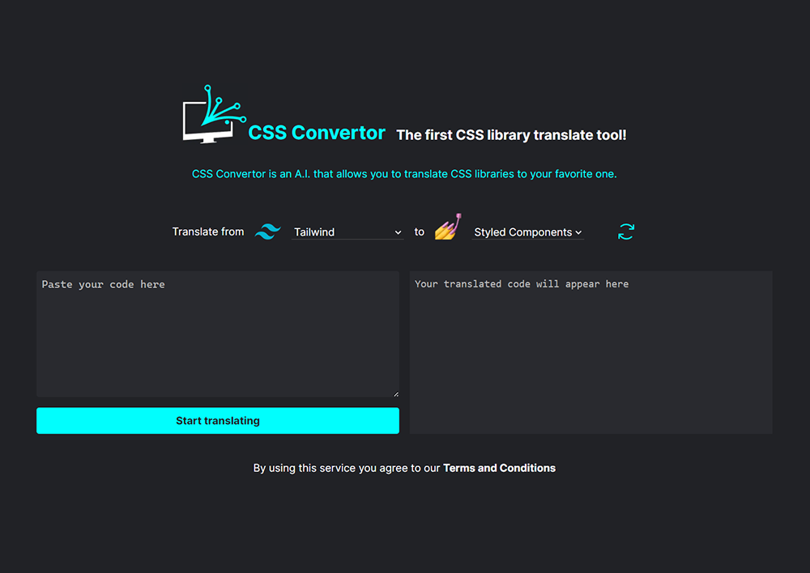

My cutting-edge CSS converter website, leveraging AI technology to effortlessly translate Tailwind CSS into Styled Component CSS. Designed for efficiency, this tool caters to developers and designers who value precision and speed in their workflow. Its intuitive AI-driven interface ensures a smooth and accurate conversion, bridging utility-first and component-based styling seamlessly. Ideal for both new projects and refactoring tasks, this website is a game-changer in the realm of web development.
My journey with this groundbreaking CSS converter project began with the recognition of a significant gap in the web development market. I observed that many developers struggled to efficiently transition between Tailwind CSS and Styled Component CSS, two popular but fundamentally different styling methodologies. This realization sparked my interest in creating a solution that would not only address this issue but also enhance the overall development workflow. I spent considerable time in the planning phase, meticulously outlining the project's objectives, scope, and the technologies that would be instrumental in its realization. This phase was crucial in laying a solid foundation for the project and ensuring that my vision was clearly defined and achievable.
The development phase marked a period of intense learning and innovation. One of the project's core features, the AI-driven translation engine, was both a challenge and an exciting opportunity. I delved deep into AI technology, exploring various algorithms and models that could accurately translate CSS styles while maintaining the integrity and intent of the original code. The integration of AI not only set this tool apart from others but also allowed for a level of precision and efficiency that manual conversion methods could not achieve. This phase was a testament to my technical skills and adaptability, as I navigated the complexities of AI to create a solution that was both powerful and user-friendly.
With the backbone of the project in place, my focus shifted to the user interface. I was deeply involved in designing a platform that was intuitive, visually appealing, and accessible to a diverse range of users. This stage was particularly rewarding as it allowed me to blend technical prowess with creative design. Recognizing the importance of user feedback, I initiated a beta testing phase, where select users were invited to try the tool. Their insights were invaluable, leading to several iterations that significantly improved the overall user experience and functionality of the converter.
As the project continues to evolve, it's important to note that it is still in its beta phase. This ongoing stage represents a commitment to refinement and perfection, with continuous testing and development underway to further enhance the tool's capabilities and user experience. Being in beta allows for an open channel of feedback from users, enabling me to make real-time improvements and adapt the platform to the ever-changing landscape of web development. This phase is not just about ironing out any remaining issues, but also about pushing the boundaries of what this AI-powered CSS converter can achieve, ensuring that it remains at the forefront of innovation and utility in the web development community.



- Categories: Website
A.I. - Period: 04/2023 - 11/2023
- Live Beta: cssconvertor.com